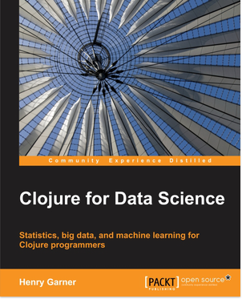

Expressive Parallel Analytics with Transducers (or Transducers from the bottom up)
Mission-critical analysis


Metastatistics
https://www.timeshighereducation.com/news/ranking-methodology-2016
- 13 performance indicators
- 10 quotient indicators
- 4 weighted quotients across 6 subjects
- 1,000+ institutions
- 7 ranking tables
Annoying-sized data
Analytic sequence
- Load & join
- Apply rules
- Apply filters
- Normalise data
- Harmonise units
- Summary statistics
- Harmonise ranges
- Calculate score
- Output
- x 13 x 7
(load-data "data.edn") ;;({:name "A", :fx 0.8, :a 90, :b 50} ;; {:name "B", :fx 0.2, :a 80, :b 80} ;; {:name "C", :fx 0.1, :a 60, :b 40} ;; {:name "D", :fx 0.5, :a 50, :b 70})
(->> (load-data "data.edn") (filter relevant?) (map convert-currency) (map assign-score)) ;;({:name "A", :fx 0.8, :a 112.5, :b 62.5, :score 175.0} ;; {:name "B", :fx 0.2, :a 400.0, :b 400.0, :score 800.0} ;; {:name "D", :fx 0.5, :a 100.0, :b 140.0, :score 240.0})
(filter relevant?)
CC BY 2.0 https://www.flickr.com/photos/cmatsuoka/3824494272/
(def xform (comp (filter relevant?) (map convert-currency) (map assign-score)))
;; PICTURE OF EFFECTS BOARD
(sequence xform (load-data "data.edn")) ;;({:name "A", :fx 0.8, :a 112.5, :b 62.5, :score 175.0} ;; {:name "B", :fx 0.2, :a 400.0, :b 400.0, :score 800.0} ;; {:name "D", :fx 0.5, :a 100.0, :b 140.0, :score 240.0})
;; PICTURE OF EFFECTS BOARD HOOKED TO GUITAR
(->> (load-data "data.edn") (sequence (comp xform (take 2)))) ;;({:name "A", :fx 0.8, :a 112.5, :b 62.5, :score 175.0} ;; {:name "B", :fx 0.2, :a 400.0, :b 400.0, :score 800.0}) (->> (load-data "data.edn") (sequence (comp xform (map :score)))) ;; (175.0 800.0 240.0)
(->> (load-data "data.edn") (transduce (comp xform (map :score)) +)) ;; 1215.0
;; PICTURE OF GUITAR HOOKED TO SOMETHING ELSE
(defn mean [xs] (let [sum (reduce + xs) count (count xs)] (when-not (zero? count) (/ sum count)))
(defn mean-reducer [accum x] (-> (update-in accum [:sum] + x) (update-in [:count] inc))) #_(reduce mean-reducer (range 10))
;; PICTURE OF GUITAR SLUG
(reduce mean-reducer {:sum 0 :count 0} (range 10)) ;; { ... }
(defn mean ([] {:sum 0 :count 0}) ([{:keys [sum count]}] (when-not (zero? count) (/ sum count))) ([accum x] (-> (update-in accum [:count] inc) (update-in [:sum] + x)))) (mean (reduce mean (mean) (range 10)))
(transduce (map identity) mean (range 10))
(defn identity-transducer [rf] (fn ([] (rf)) ;; Init ([acc] (rf acc)) ;; Complete ([acc x] (rf acc x)))) ;; Step (defn identity-transducer [rf] rf) (def identity-transducer identity)
(transduce identity mean (range 10))
;; What is this? (->> (load-data "data.edn") (transduce (comp xform (map :score)) mean))
https://en.wikipedia.org/wiki/Algorithms_for_calculating_variance
(defn variance ([] [0 0 0]) ([ [count mean sum-of-squares] ] (/ sum-of-squares (max 1 (dec count)))) ([[count mean sum-of-squares] x] (let [count' (inc count) mean' (+ mean (/ (- x mean) count'))] [count' mean' (+ sum-of-squares (* (- x mean') (- x mean)))]))) (->> (load-data "data.edn") (transduce (comp xform (map :score)) variance))
;; IMAGE OF BELL CURVE
;; Completing
(def standard-deviation (completing variance #(Math/sqrt (variance %))))
;; Normalization
(->> (load-data "data.edn") (sequence (map (juxt :a :b)))) ;; ([90 50] [80 80] [60 40] [50 70])
(->> (load-data "data.edn") (transduce (map :score) (juxt mean standard-deviation)))
;; PICTURE OF GUITAR SLUG
(defn juxt-reducer [& rfns] (fn ([] (mapv (fn [f] (f)) rfns)) ([acc] (mapv (fn [f a] (f a)) rfns acc)) ([acc x] (mapv (fn [f a] (f a x)) rfns acc)))) (def rf (juxt-reducer + conj)) (transduce identity rf (range 10))
(def rf (juxt-reducer + ((take 3) conj))) (transduce identity rf (range 10))
;; PICTURE OF GUITAR SLUG
(defn juxt-reducer [& rfns] (fn ([] (mapv (fn [f] (f)) rfns)) ([acc] (mapv (fn [f a] (f (unreduced a))) rfns acc)) ([acc x] (let [all-reduced? (volatile! true) results (mapv (fn [f a] (if (reduced? a) a (do (vreset! all-reduced? false) (f a x)))) rfns acc)] (if @all-reduced? (reduced results) results)))))
(def rf (juxt-reducer + ((take 3) conj))) (transduce identity rf (range 10)) ;; [45 [0 1 2]] ;; reveal... (transduce identity rf (range 10)) ;; [45 []]
PICTURE OF SOMETHING STATEFUL?
(defn facet [rf fns] (->> (map (fn [f] ((map f) rf)) fns) (apply juxt-reducer))) (def rf (facet + [:a :b])) (->> (load-data "data.edn") (transduce identity rf)) ;; => [280 240]
(defn weighted-mean [nf df] (let [rf (facet mean [nf df])] (completing rf (fn [x] (let [[n d] (rf x)] (when-not (zero? d) (/ n d))))))) (->> (load-data "data.edn") (transduce identity (weighted-mean :a :b))) ;; => 7/6
(defn fuse [kvs] (let [rfns (vals kvs) rf (apply juxt-reducer rfns)] (completing rf #(zipmap (keys kvs) (rf %))))) (def rf (fuse {:mean mean :sd standard-deviation})) (->> (load-data "data.edn") (transduce (map :a) rf)) ;; => {:mean 70, :sd 18.257418583505537}
(def rf (fuse {:mean-score ((map :score) mean) :fields (facet (fuse {:mean mean :sd standard-deviation}) [:a :b])})) (->> (load-data "data.edn") (transduce xform rf))
;; IMAGE SHOWING REDUCE COMBINE
(require '[clojure.core.reducers :as r]) (defn mean-reducer ([] {:sum 0 :count 0}) ([{:keys [sum count]}] (/ sum count)) ([accum x] (-> (update-in accum [:count] inc) (update-in [:sum] + x)))) (defn mean-combiner ;; Combiner is used for init value ([] {:sum 0 :count 0}) ([{:keys [sum count]}] (/ sum count)) ([a b] (merge-with + a b))) (->> (load-data "data.edn") (sequence (comp xform (map :score))) (r/fold mean-combiner mean-reducer))
;; IMAGE OF STEVE VAI
(defn histogram-reducer ([] (DoubleHistogram. 1e8 3)) ([hist x] (doto hist (.recordValue x)))) (defn histogram-combiner ([] (DoubleHistogram. 1e8 3)) ([hist] (vector (.getValueAtPercentile hist 25) (.getValueAtPercentile hist 75))) ([a b] (doto a (.add b)))) (->> (load-data "data.edn") (sequence (comp xform (map :score))) (r/fold histogram-combiner histogram-reducer))
(defn fold [n combinef reducef in] (->> (for [_ (range n)] (async/reduce reducef (reducef) in)) (async/merge) (async/map< reducef) (async/reduce combinef (combinef)) (async/map< combinef))) #_(->> (load-data "data.edn") (sequence (comp xform (map :score))) (async/to-chan) (fold 2 histogram-combiner histogram-reducer) (async/<!!))
;; IMAGE OF BILL BAILEY
(defn fold [n xform reducef combinef in] (let [reduced (async/chan n) f (xform reducef)] (->> (for [_ (range n)] (async/reduce f (f) in)) (async/merge) (async/pipeline n reduced (map f))) (async/go (->> (async/reduce combinef (combinef) reduced) (async/<!) (combinef)))))
(def data (take 100000 (cycle (load-data "data.edn")))) (with-progress-reporting (quick-bench (->> (async/to-chan data) (fold 1 (comp xform (map :score)) (completing histogram-reducer) histogram-combiner) (async/<!!)))) (with-progress-reporting (quick-bench (->> (sequence (comp xform (map :score)) data) (r/fold histogram-combiner histogram-reducer))))
Summary
- Separate process from substrate
- Transducers, step functions and transducible processes
- Reducing and combining functions
- Create composable, extensible units of computation
- Defer decisions about context
- Benefit
References
Thanks!
https://github.com/henrygarner/data-science-london-oct-2015

Henry Garner
@henrygarner
If you liked this…
http://cljds.com/cljds-book | http://cljds.com/cljds-amzn
